K562 Activating DNase matched - State 13:Ctcf (n=12)
K562 Activating DNase matched - State 13:Ctcf (n=12)
[
See group descriptions
]
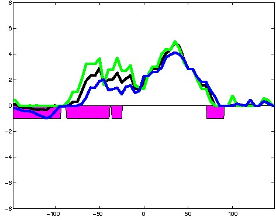
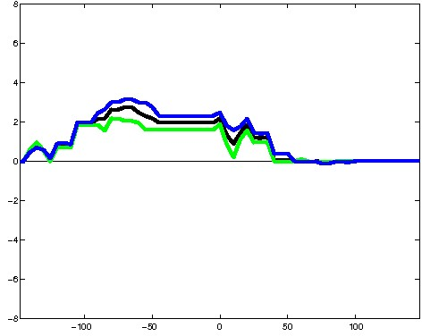
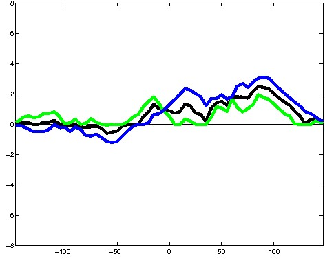
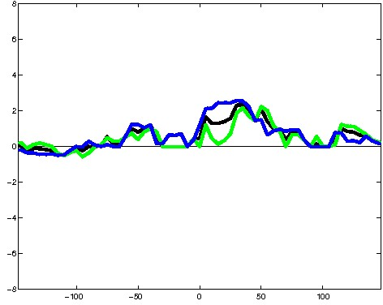
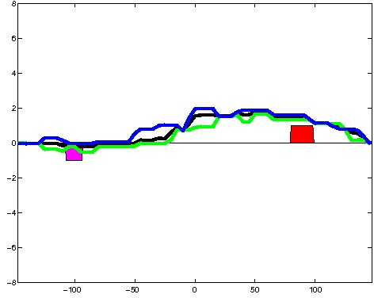
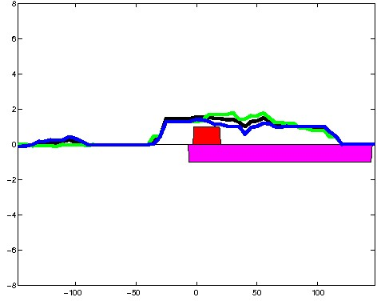
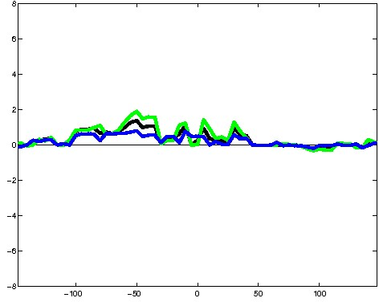
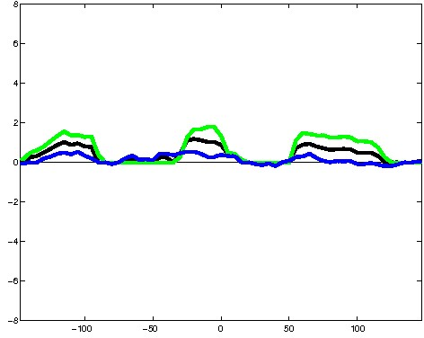
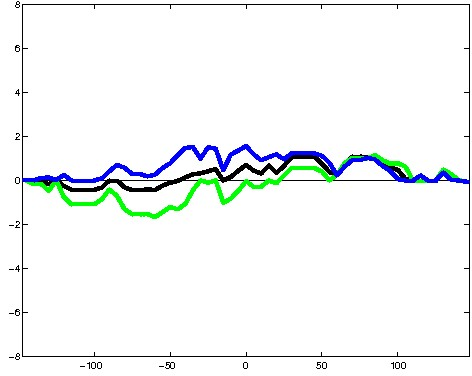
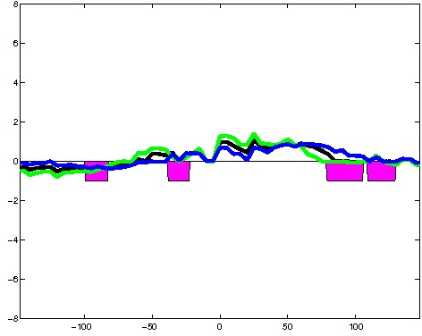
; picked in K562 (state 13:Ctcf, DNase); matched; chr4:42,304,429-42,304,723 (295bp)") 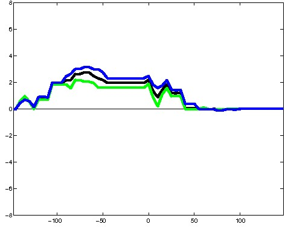
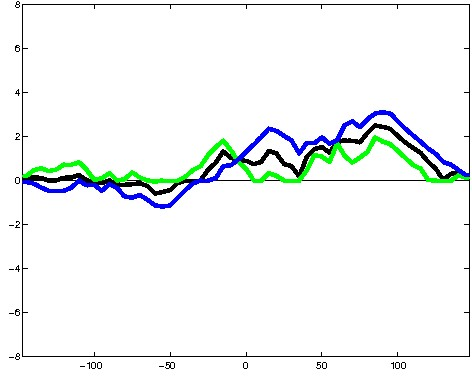
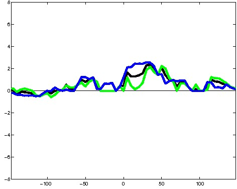
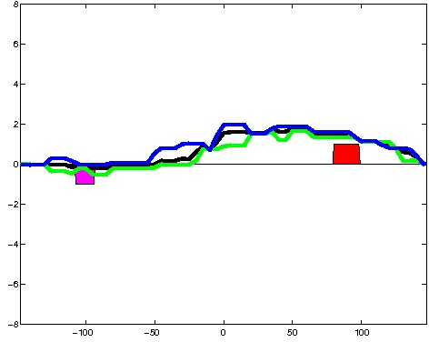
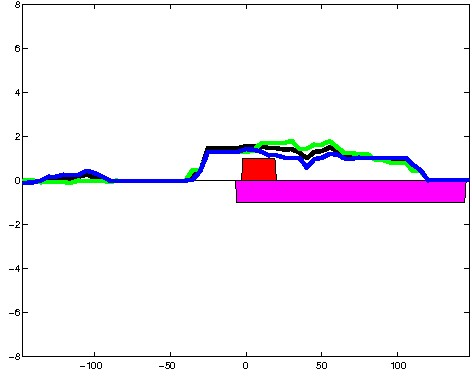
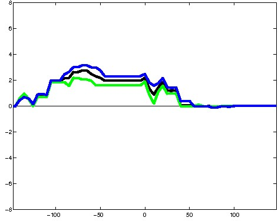
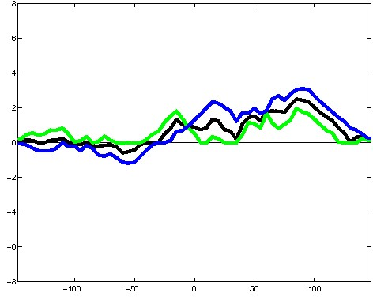
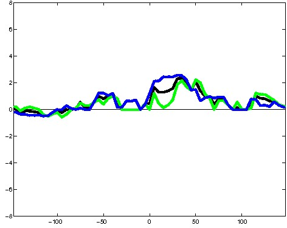
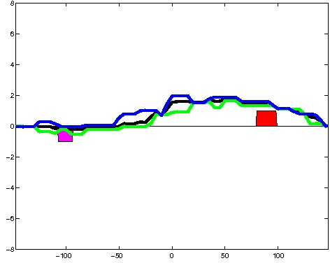
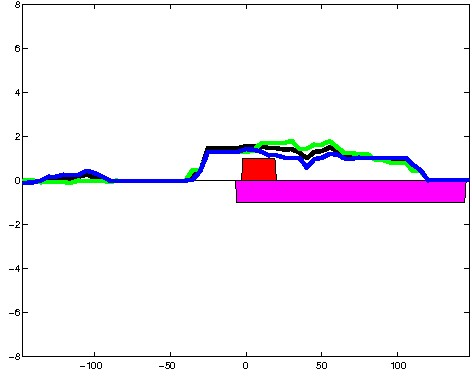
; picked in K562 (state 13:Ctcf, DNase); matched; chrX:31,297,429-31,297,723 (295bp)") 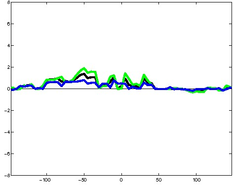
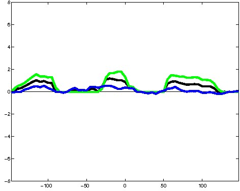
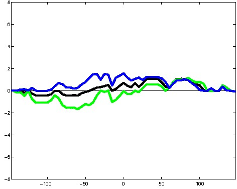
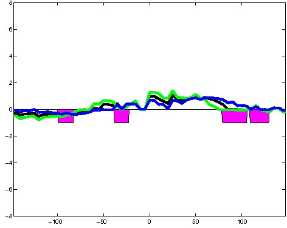
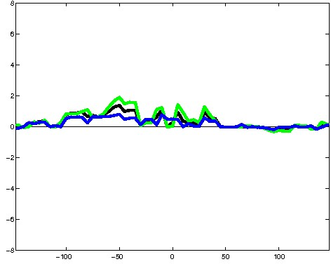
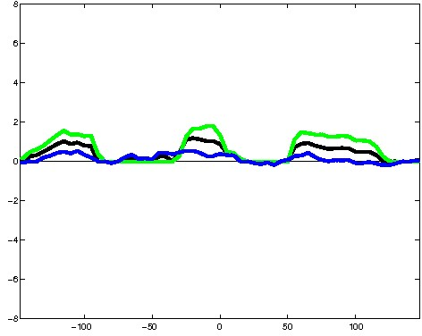
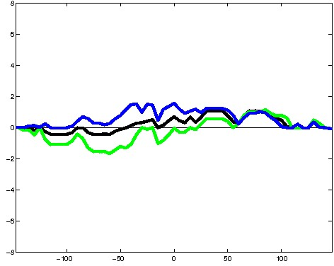
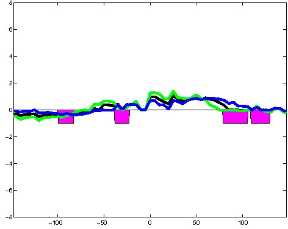